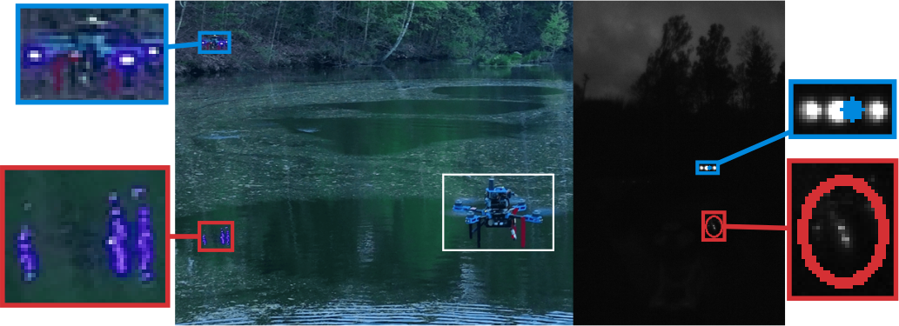
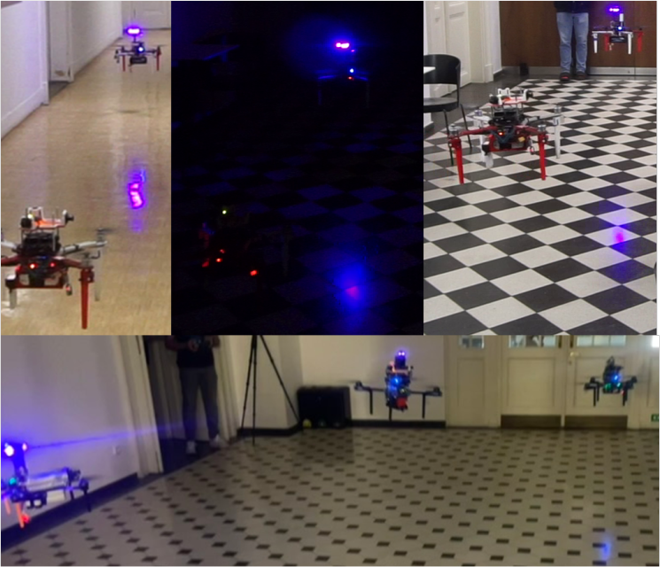
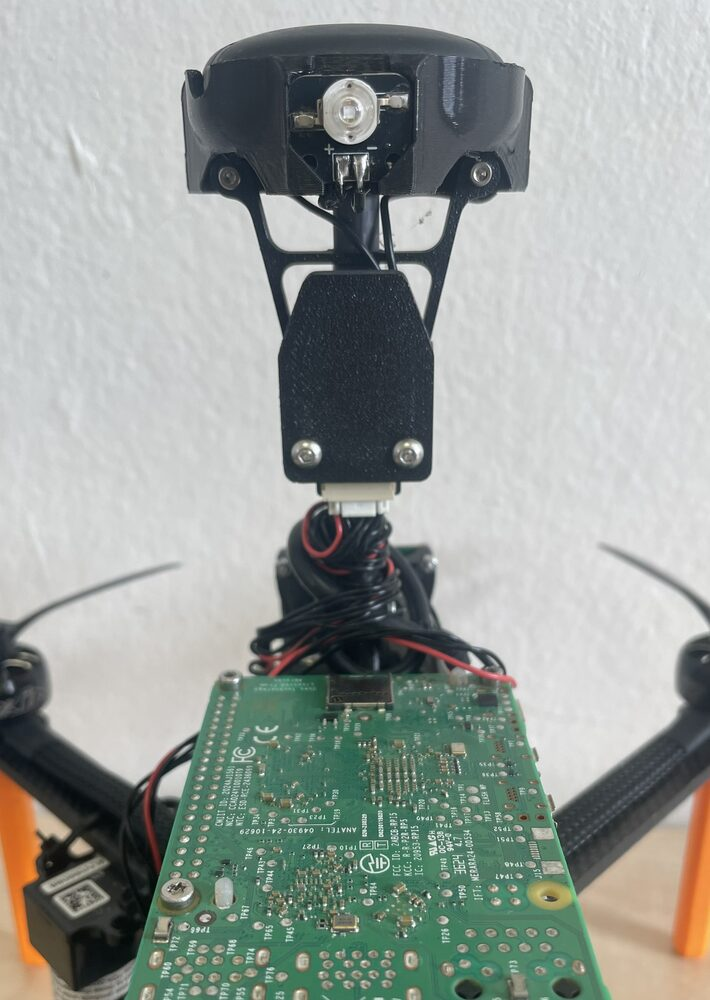
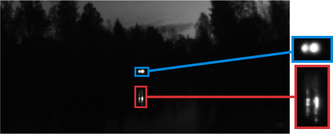
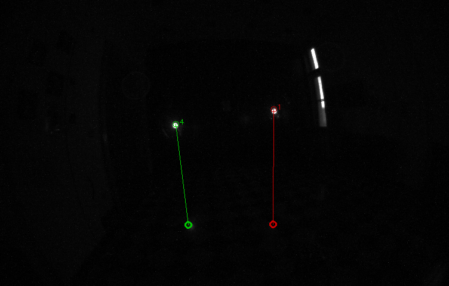
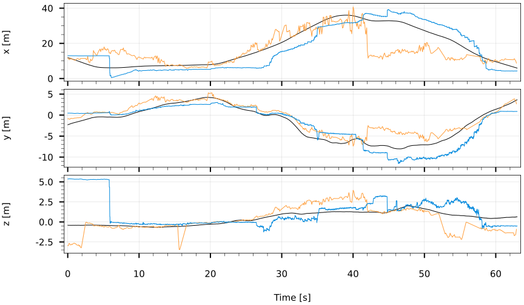
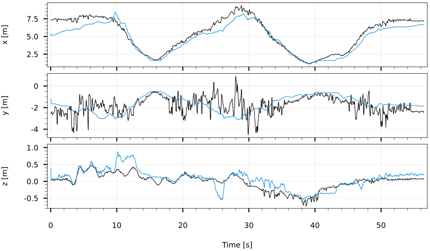
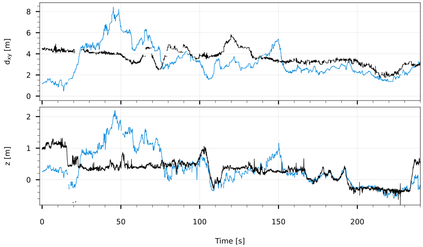
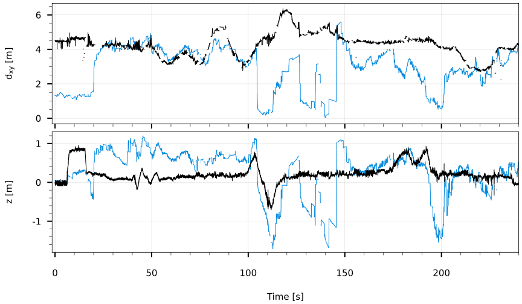
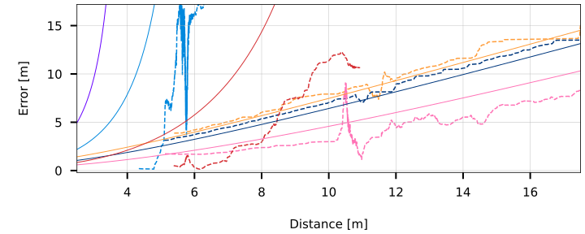

Reflection-Based Relative Localization for Cooperative UAV Teams Using Active Markers
Abstract
Reflections of active markers in the environment are a common source of ambiguity in onboard visual relative localization. This work presents a novel approach that exploits these typically unwanted reflections for onboard relative localization in heterogeneous multi-UAV teams operating over specular, near-planar surfaces such as calm water and flat indoor floors. Using only a camera, active markers, and a single-beam rangefinder, the method requires no prior knowledge of robot size, marker configuration, or surface reflectance properties, and propagates the uncertainty introduced by surface irregularities, including those of dynamic water surfaces. We further characterize, analytically and experimentally, how surface tilt biases the estimate, and identify the slope range over which the level-surface assumption holds. Indoor multi-UAV and outdoor experiments validate the localization accuracy, demonstrating reliable operation across varying lighting conditions and greater effective range than state-of-the-art vision-based active-marker methods, with higher accuracy beyond 30 m.
How it works
Side view, cone angles exaggerated. The paper uses elliptical cones in 3D.
Try it in your browser
Experiments
Indoors over PVC and tiled floors, by day and at night, with heterogeneous teams. Outdoors over a pond against the UVDAR active-marker system. Ground truth from UWB indoors and RTK outdoors.





UAV
F450 / Holybro X500 frame, Intel NUC 10 i7FNK, BlueFOX 752×480 at 10–30 Hz
MAV
Custom 27 cm frame, Raspberry Pi 5 (8 GB), ArduCam 640×400 at 10 Hz
Sensing
Fisheye lens with UV bandpass filter, downward LiDAR rangefinder indoors, RTK height outdoors
Results
Over water, our method kept tracking beyond 30 m. UVDAR, which infers distance from the pixel spacing between markers, became unreliable past 20 m. Along the optical axis our error was 18.5–37.3 % lower in all three flights.

| Flight | Method | x (optical axis) | y | z |
|---|---|---|---|---|
| 1 | Ours | 3.50 ± 1.86* | 1.18 ± 0.80* | 1.04 ± 1.57 |
| UVDAR | 5.58 ± 5.77 | 1.37 ± 1.09 | 0.78 ± 0.83 | |
| 2 | Ours | 2.42 ± 1.50* | 1.73 ± 0.95 | 0.70 ± 0.47 |
| UVDAR | 2.97 ± 2.14 | 1.76 ± 0.97 | 0.67 ± 0.44 | |
| 3 | Ours | 5.01 ± 4.15* | 3.29 ± 1.58* | 0.98 ± 0.85 |
| UVDAR | 7.00 ± 6.03 | 7.96 ± 5.60 | 0.97 ± 0.67 |
* Significantly lower than UVDAR (Wilcoxon p < 0.05, 95 % CI of the paired difference fully below zero). Along z, UVDAR was 1–25 % lower, but the difference was not significant.
Two UAVs, each with a single compact LED array, over PVC and tiled floors, by day and at night. The largest error is along the optical axis, as expected for monocular depth. Accuracy holds across floor types and lighting.

| 1 · PVC, day | 2 · PVC, night | 3 · Tiles, night | 4 · Tiles, night | |
|---|---|---|---|---|
| x | 1.29 ± 0.67 | 2.12 ± 0.70 | 1.30 ± 0.61 | 1.22 ± 0.60 |
| y | 0.65 ± 0.52 | 1.09 ± 0.74 | 0.68 ± 0.42 | 0.61 ± 0.41 |
| z | 0.12 ± 0.09 | 0.08 ± 0.12 | 0.10 ± 0.09 | 0.08 ± 0.09 |
Three heterogeneous platforms, all running the method onboard, including the MAV on a Raspberry Pi 5. Between 105 s and 155 s the MAV was deliberately flown in front of the observer to cause interference. Outside that interval, both team members were tracked reliably.


ours UWB ground truth
About 80 % of each frame's time goes to sampling the reflection cone. The particle filter update stays below 3 ms. The estimator always takes the newest frame, so an overrun lowers the rate but does not add latency.
Surface tilt

The method assumes a level surface. If the surface rises toward the transmitter (\(\tau < 0\)), the estimate diverges at \(d_{\text{sing}} = h/\tan|\tau|\). If it falls away (\(\tau > 0\)), the range is underestimated but stays bounded. Calm water is well within the safe range. At \(|\tau| = 5^\circ\) the error exceeds that of the level-surface experiments only beyond about 8 m.
Height bias
The observer's height sets the scale of the whole estimate. We biased it by ±15 % on the outdoor flights.
| Flight | x | y | z | |||
|---|---|---|---|---|---|---|
| −15% | +15% | −15% | +15% | −15% | +15% | |
| 1 | +0.33 | −0.23 | −0.03 | −0.01 | +0.02 | −0.04 |
| 2 | +0.07 | +0.14 | +0.39 | −0.16 | −0.05 | +0.09 |
| 3 | +0.92 | +1.22 | +0.10 | −0.55 | +0.30 | +0.15 |
An ultrasonic rangefinder on the same flights deviated from RTK by 4 cm RMS, below 4 % of the flight height.
Compared with other onboard approaches
| Ours | UVDAR | CREPES | Swarm-LIO2 | CNN | |
|---|---|---|---|---|---|
| Hardware | Cam, LED, Rng | Cam, LED | Cam, LED, UWB, IMU | LiDAR, IMU | Cam, GPU |
| Mass / power [g / W]1 | 62 / 6.5 | 40 / 5.9 | 130★ / ≤4★ | 265 / 6.5 | 200★ / 17★ |
| Output rate [Hz] | 10 | 60 | 100 | 30 | 5 |
| Error @ range [m]2 | MAEx 2.4–5.0 @ ≤40 | MAEx 3.0–7.0 @ ≤40 | P25–P75 0.10–0.16 @ ≤27.5 | std. 0.05 | P25–P75 0.3–0.7 @ 6 |
| Approx. cost [$] | 570 | 450 | 500★ | 700★ | 500★ |
| Direct ID | ✓ | ✓ | ✓ | ✗ | ✗ |
| RF-free | ✓ | ✓ | ✗ | ✓ | ✓ |
| Lighting-robust | ✓ | ✓ | ◐ | ✓ | ✗ |
1 Sensing hardware only, onboard compute excluded. 2 As reported in each original publication; the metrics are not directly comparable. MAEx: mean absolute error along the optical axis. ★ Estimated from datasheets.
BibTeX
@article{lakemann2026reflection,
title = {Reflection-Based Relative Localization for Cooperative {UAV} Teams Using Active Markers},
author = {Lakemann, Tim and Bonilla Licea, Daniel and Walter, Viktor and Saska, Martin},
journal = {IEEE Robotics and Automation Letters},
year = {2026},
doi = {10.1109/LRA.2026.3748684}
}